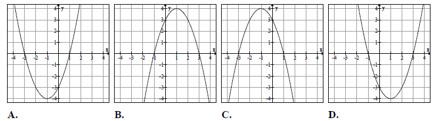
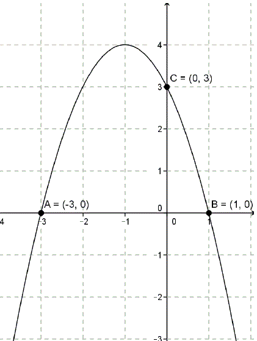
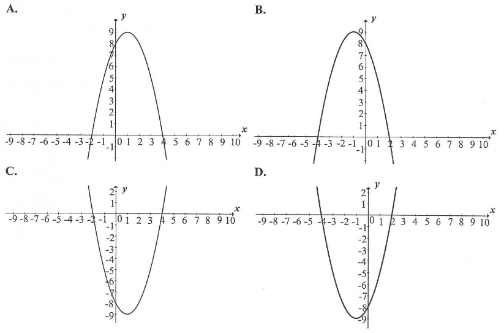
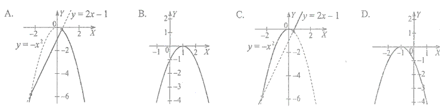

Jesteś tutaj: Kurs
zadaniowy do starej matury → Matura podstawowa z matematyki - kurs
- funkcja kwadratowa
Matura podstawowa z matematyki - kurs - funkcja kwadratowa
W tej lekcji wideo znajdziesz bardzo dokładne omówienie pojęcia funkcji
kwadratowej.
Czas nagrania: 45 min.
Dana jest parabola o równaniu \(y=x^2+8x-14\). Pierwsza
współrzędna wierzchołka tej paraboli jest równa
A.\( x=-8 \)
B.\( x=-4 \)
C.\( x=4 \)
D.\( x=8 \)
B
Wskaż fragment wykresu funkcji kwadratowej, której zbiorem wartości jest \(\langle
-2,+\infty )\). 
B
Na jednym z poniższych rysunków przedstawiono fragment wykresu funkcji
\(y=x^2+2x-3\). Wskaż ten rysunek. 
A
Wierzchołkiem paraboli będącej wykresem funkcji określonej wzorem \(f(x)=x^2-4x+4\) jest punkt o współrzędnych
A.\( (0,2) \)
B.\( (0,-2) \)
C.\( (-2,0) \)
D.\( (2,0) \)
D
Miejscem zerowym funkcji kwadratowej \(y=-(-x-7)(1+x)\)
jest
A.\( x=7 \)
B.\( x=1 \)
C.\( x=0 \)
D.\( x=-1 \)
D
Wykresem funkcji kwadratowej \(f(x)=-3x^2+3\) jest
parabola o wierzchołku w punkcie
A.\( (3,0) \)
B.\( (0,3) \)
C.\( (-3,0) \)
D.\( (0,-3) \)
B
Miejscami zerowymi funkcji kwadratowej \( y = -3(x-7)(x+2)
\) są
A.\(x=7, x=-2 \)
B.\(x=-7, x=-2 \)
C.\(x=7, x=2 \)
D.\(x=-7, x=2 \)
A
Liczby \(x_1, x_2\) są rozwiązaniami równania \(4(x + 2)(x - 6) = 0\) . Suma
\({x_1}^2 + {x_2}^2\) jest równa
A.\( 16 \)
B.\( 32 \)
C.\( 40 \)
D.\( 48 \)
C
Wskaż funkcję kwadratową, której zbiorem wartości jest przedział \( (-\infty ;3
\rangle \).
A.\(f(x)=-(x-2)^2+3 \)
B.\(f(x)=(2-x)^2+3 \)
C.\(f(x)=-(x+2)^2-3 \)
D.\(f(x)=(2-x)^2-3 \)
A
Wykres funkcji kwadratowej \( f(x)=3(x+1)^2-4 \) nie ma
punktów wspólnych z prostą o równaniu
A.\(y=1 \)
B.\(y=-1 \)
C.\(y=-3 \)
D.\(y=-5 \)
D
Prosta o równaniu \( y=a \) ma dokładnie jeden punkt
wspólny z wykresem funkcji kwadratowej \( f(x)=-x^2+6x-10 \). Wynika
stąd, że
A.\(a=3 \)
B.\(a=0 \)
C.\(a=-1 \)
D.\(a=-3 \)
C
Jaka jest najmniejsza wartość funkcji kwadratowej \(
f(x)=x^2+4x-3 \) w przedziale \( \langle 0, 3 \rangle \)?
A.\(-7 \)
B.\(-4 \)
C.\(-3 \)
D.\(-2 \)
C
Oblicz największą wartość funkcji \(f(x)=-2x^2+16x-15\) w
przedziale \(\langle -2,3 \rangle\).
\(15\)
Oblicz najmniejszą wartość funkcji kwadratowej \(f(x)=x^2-6x+1\) w przedziale \(\langle 0,1 \rangle\).
\(-4\)
Funkcja kwadratowa \(f(x)=-2(x-5)(x+1)\) jest malejąca w zbiorze
A.\((-1,5)\)
B.\( ( -\infty ,2 \rangle \)
C.\(\langle 2,+\infty )\)
D.\((-\infty ,-1)\cup (5,+\infty )\)
C
Wierzchołkiem paraboli o równaniu \(y=-3(x-2)^2+4\) jest
punkt o współrzędnych
A.\( (-2, -4) \)
B.\( (-2, 4) \)
C.\( (2, -4) \)
D.\( (2, 4) \)
D
Wierzchołek paraboli o równaniu \(y=(x+1)^2+2c\) leży
na prostej o równaniu \(y=6\). Wtedy
A.\( c=-6 \)
B.\( c=-3 \)
C.\( c=3 \)
D.\( c=6 \)
C
Na wykresie przedstawiony jest trójmian \(y = ax^2 + bx + c\).  Wynika z tego, że:
Wynika z tego, że:
Wynika z tego, że: A.\( b\lt 0 \)
B.\( b>0 \)
C.\( b\le 0 \)
D.\( b\ge 0 \)
B
Wierzchołek paraboli, która jest wykresem funkcji \( y=x^2 -2x-3 \) leży na
prostej:
A.\(y=-4 \)
B.\(y=4 \)
C.\(y=1 \)
D.\(y=2 \)
A
Rysunek obok przedstawia wykres funkcji kwadratowej \( f \). Zapisz wzór funkcji \(
f \) w postaci ogólnej i podaj jej zbiór wartości. 
\(f(x)=-x^2-2x+3\)
\(ZW=(-\infty ;4\rangle \)
Na rysunku przedstawiono fragment wykresu funkcji kwadratowej \( f \).  Funkcja \( f \) określona jest wzorem
Funkcja \( f \) określona jest wzorem
Funkcja \( f \) określona jest wzorem
A.\(f(x)=-\frac{1}{2}(x-3)(x+1) \)
B.\(f(x)=\frac{1}{2}(x-3)(x+1) \)
C.\(f(x)=-\frac{1}{2}(x+3)(x-1) \)
D.\(f(x)=\frac{1}{2}(x+3)(x-1) \)
A
Wykresem funkcji kwadratowej \( f(x)=2x^2+bx+c \) jest parabola, której
wierzchołkiem jest punkt \( W=(4,0) \). Oblicz wartości współczynników \( b \) i \( c \).
\(b=-16\), \(c=32\)
Wskaż rysunek, na którym przedstawiony jest wykres funkcji kwadratowej, określonej
wzorem \( f(x)=(x-2)(x+4) \) . 
D
Funkcja kwadratowa, której zbiorem wartości jest przedział \( ( -\infty, -3\rangle
\) , może być określona wzorem
A.\(y=(x+2)^2-3 \)
B.\(y=-(x+3)^2 \)
C.\(y=-(x-2)^2-3 \)
D.\(y=-x^2+3 \)
C
Wskaż równanie osi symetrii paraboli określonej równaniem \(
y=-x^2+4x-11 \).
A.\(x=-4 \)
B.\(x=-2 \)
C.\(x=2 \)
D.\(x=4 \)
C
Funkcja kwadratowa \(y=x^2+bx+c\) jest malejąca dla \(x\in (-\infty ;2 \rangle\) a
zbiorem jej wartości jest przedział \(\langle -4;\infty )\). Postać kanoniczna tej funkcji opisana
jest wzorem
A.\( f(x)=(x-2)^2-4 \)
B.\( f(x)=(x+2)^2+4 \)
C.\( f(x)=(x+4)^2+2 \)
D.\( f(x)=(x-4)^2+2 \)
A
Dwie funkcje \(f(x)=2x-1\) oraz \(g(x)=-x^2\) określone są w zbiorze
\(\mathbb{R}.\) Wówczas wykres funkcji \(h\) określonej wzorem \(h(x)=f(x)+g(x)\) jest przedstawiony na rysunku: 
B
Liczby \(x_1, x_2\) są różnymi rozwiązaniami równania \(x^2-7=0\). Wtedy wyrażenie \(|x_1-x_2|\) jest równe
A.\( 0 \)
B.\( \sqrt{7} \)
C.\( -\sqrt{7} \)
D.\( 2\sqrt{7} \)
D
Wykres funkcji \(f(x)=x^2-2x-8,\) gdzie \(x \in
\mathbb{R}\), przecina oś \(OX\) w punktach \(A\) i \(B\).
- Wyznacz współrzędne punktów \(A\) i \(B\).
- Oblicz pole trójkąta \(AWB\), jeśli \(W\) jest wierzchołkiem paraboli będącej wykresem funkcji \(f\).
\(A=(-2,0)\), \(B=(4,0)\), \(P_{\Delta AWB}=27\)
Wykaż, że jeżeli \(c\lt 0\), to trójmian kwadratowy \(y=x^2+bx+c\) ma dwa różne miejsca zerowe.
Liczby \(x_1\) oraz \(x_2\) są rozwiązaniami równania \(x^2 - 9 = 0\). Oblicz
wartość liczbową wyrażenia \(\frac{x_1+x_2}{2}\).
\(0\)
\( x_1 \) jest mniejszym, zaś \( x_2 \)większym miejscem zerowym funkcji \(
f(x)=2x^2+10x+12 \). Wyrażenie \( x_2-x_1 \) ma wartość:
A.\(-1 \)
B.\(1 \)
C.\(-2 \)
D.\(2 \)
B
Zbiorem wartości funkcji \(f(x) = -2(x + 3)(x - 4)\)
jest przedział:
A.\( \left ( -\infty , 24\frac{1}{2} \right \rangle \)
B.\( \left \langle -24\frac{1}{2},+\infty \right ) \)
C.\( \left \langle 24\frac{1}{2},+\infty \right ) \)
D.\( \left \langle -25\frac{1}{2},+\infty \right ) \)
A
Liczby \(x_1\) oraz \(x_2\) są rozwiązaniami równania \((x + 1)(2 - x) = 0\).
Oblicz \({x_1}^2+x_1x_2+{x_2}^2\).
\(3\)
W dwóch hotelach wybudowano prostokątne baseny. Basen w pierwszym hotelu ma
powierzchnię \(240\) m2. Basen w drugim hotelu ma powierzchnię \(350\) m2
oraz jest o \(5\) m dłuższy i \(2\) m szerszy niż w pierwszym hotelu. Oblicz, jakie wymiary
mogą mieć baseny w obu hotelach. Podaj wszystkie możliwe odpowiedzi.
\(8\times 30\) i \(10\times 35\) lub \(12\times 20\) i \(14\times 25\)
Kolarz pokonał trasę \(114\) km. Gdyby jechał ze średnią prędkością mniejszą o
\(9{,}5\) km/h, to pokonałby tę trasę w czasie o \(2\) godziny dłuższym. Oblicz, z jaką średnią
prędkością jechał ten kolarz.
\(v=28{,}5\) km/h
Miasto \(A\) i miasto \(B\) łączy linia kolejowa długości \(210\) km. Średnia
prędkość pociągu pospiesznego na tej trasie jest o \(24\) km/h większa od średniej prędkości pociągu
osobowego. Pociąg pospieszny pokonuje tę trasę o \(1\) godzinę krócej niż pociąg osobowy. Oblicz
czas pokonania tej drogi przez pociąg pospieszny.
\(t=2{,}5\) h
Adam rozwiązywał codziennie taką sama liczbę zadań i w sumie rozwiązał \(60\)
zadań. Jeśli rozwiązywałby codziennie o \(6\) zadań więcej, to rozwiązałby te zadania o \(5\) dni
krócej. Oblicz, przez ile dni Adam rozwiązywał zadania przed maturą i ile zadań rozwiązywał każdego
dnia.
Przez \(10\) dni rozwiązywał po \(6\) zadań.
W czasie wakacji Marcin przejechał rowerem ze stałą prędkością odległość z
miasteczka \(A\) do \(B\) liczącą \(120\) km. Gdyby jechał ze średnią prędkością o \(5\) km/godz.
większą, to przejechałby tę odległość w czasie o \(2\) godziny krótszym. Wyznacz średnią rzeczywistą
prędkość Marcina i rzeczywisty czas przejazdu.
\(v=15\) km/h, \(t=8\) h
Z dwóch miast \(A\) i \(B\), odległych od siebie o \(18\) kilometrów, wyruszyli
naprzeciw siebie dwaj turyści. Pierwszy turysta wyszedł z miasta \(A\) o jedną godzinę
wcześniej niż drugi z miasta \(B\). Oblicz prędkość, z jaką szedł każdy turysta, jeżeli
wiadomo, że po spotkaniu pierwszy turysta szedł do miasta \(B\) jeszcze \(1{,}5\) godziny, drugi zaś
szedł jeszcze \(4\) godziny do miasta \(A\).
\(v_1=4\) km/h, \(v_2=3\) km/h